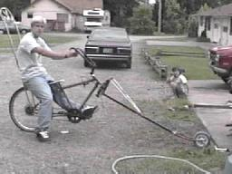

This passenger bike was seen parked in Brooklyn.
There are quite a few worthy cycle manufacturers out there that are not directly affiliated with Chunk. We are quite willing to provide space for images sent our way.
|
Recumbents (and tandems) appear to be relatively easy to make from existing bicycles, but hard to make well. There are lots of exotic advantages that a recumbent can have, such as a low center of gravity, a short wheelbase, a long wheelbase, a fairing, or even a trunk. Hard to incorporate with just a hacksaw and a torch. Creative recumbent hackers simply stick the pedals forward to produce a reclining position. This also keeps the pilot high off of the ground, which makes falling much more exciting. It is also quite a thrill to ride a vehicle that puts the stem right between one's legs, just waiting to tangle with one's crotch. This machine, constructed by Ms. Stout, is a front-wheel-drive recumbent, built to specifications much tighter than anything Chunk would care to produce. The drive train is attached to the fork, and the ride is surprisingly smooth. While heavy pedaling does cause wobs that are more pronounced than on an upright, it is quite easy to sync with these movements, much like when pumping and tilting a bike when out of the saddle. Take care to notice the built in co-pilot. |
|
This photograph was smuggled to us by one of our intelligence operatives. All that we know is that the inventor is based in Canada. The vehicle pictured uses a rear-wheel drive, with two sets of pedals. The front pedals are affixed to the head tube, and interact with the rear pedals via a long chain with an idler. Apparently, this bicycle can be used as a tandem! Ah, to cruise the streets at night, reclining against that backrest, fondling the body smushed to one's chest - truly, it must be a heavenly ride. |
At last, a human powered drag racer! That rear wheel is a racing slick from an automotive drag racer which has been filled with solid rubber instead of air. Thus, it also functions as a flywheel. The racer starts cranking with the rear wheel jacked off of the ground. Two or three freewheels allow the pilot to get quite a spin going. Once the highest gear is reached, a lever allows the jack to be released, and the bike speeds off as soon as the wheel touches ground. The maiden voyage was reported to have lasted 15 feet before the machine rolled, but luckily a roll cage and seatbelt are incorporated in the design.
This image came from the album of Bikesmith's in Seattle, but they don't know who this person is. If you happen to be this person, or know him, tell us and we'll get them in touch. Val over there figured out why it couldn't stay upright, and it's obvious once one has seen it: the bike isn't going to lean with that square rear slick. In fact, it doesn't really act like a singletrack vehicle at all. Anyone who tries riding a delta trike at speed, like this thing is, really, gets a lesson in inertia and centripetal force when they steer the machine round a corner and their body wants to keep going straight. Also, keeping balanced on the straight pretty much depends on a wide enough wheelbase, since a trike can't be positioned or leaned under the rider's downward force. This thing is not only narrow, it forbids the occupant from hiking over. Solution: allow the vehicle to lean by either rounding that rear wheel, or introducing some sort of pivot in the middle. Or perhaps switch to a tadpole trike, with the wide track of the large wheel in the front and a vertical headtube, in which case that wheel might just keep the ride upright by brute force.
Now, maybe rumors of this machine's deadliness were overrated, and maybe it can be ridden by one with nerves of steel and lightning-quick reflexes. But maybe we'd all love to line up and congratulate such a person, if one indeed exists.
Dear Chunk 666, Thanks for the warning. I don't think your scheme for world domination will apply to NYC, however, as it's on a different reality level. This is best illustrated by the attached image. It's a Full-Kustom Chopper. The forward cockpit is for the use of a large cat, a small dog, or a humongous rat. Regards, "Big Daddy" Wilson.
|
|
Bob Gallagher made this thing. That's a skate truck in front, so one apparently turns by leaning. |
In order to impress us, choppers have to be, well, impressive. There's just so many of them out there. This one passes, although he erroneously thinks that it's the world's longest bike (not even close!). It's constructed by Mr. Chop, who also puts out a rad gasbiker zine, Motorcycho.
The Burningman festival, hooray. Pay money to hang out in a parking lot in the desert and either look at people acting like freaks or act like a freak yourself and let people look at you. Strange machines do show up there, however. If any of these devices help to clear the streets in local Masses, one word will get us over there to provide an escort, as soon as the blimp is completed.
Aaron reports: This vehicle required four people to operate, its locomotion was supplied through an assembly of bicycle cranks and sprockets. The main turret spun via an electric motor which periodically functioned as a flamethrower. An inspiration to all. Liz also observed some people enjoying themselves in it while it was parked on a street somewhere, and she says that it has an onboard daquiri maker.
Another operative acquired this picture, and we only know what it shows us: an upright piano motivated by six rear bicycle wheels, and supported by three motorcycle or minibike wheels. We want to believe that that gibbet and disco ball are part of the vehicle, but they seem to have disappeared from the second picture.
Michael Watson writes: I had some time and I built myself a tallbike. I based it on a freestyle frame extending the front triangle 8.5 inches. This I did for comfort to suit my height. I extended the front forks two feet and beefed up the unicrown with an added center tube and a bridge and two short tubes bracing between the bridge and the curves at the crown. The back of the frame was jacked up two feet using another BMX frame. The view is great, a lot of curtains get shut as I am riding past! It's a little spooky riding in snow when forward progress is slowed and the front wheel gets that surfy feeling.
Michael also sent us pictures of his tadpole trike. Three brakes! See more at his guest page at Bike Rod & Custom.

From Ray and Levi Meinzer (framin@mci2000.com): here's a pic of our springer rail, the spring is from an office chair, the sissy bar is made of 1/2" emt conduit.
Steve Mathias made this shopping cart trike by flipping a fork, welding the cart to where the blades were, and putting it on a vertical headtube.
Rob Wotzak writes: My bike taxi is kind of a messy design. I was asked to build it to carry some friends around in a local downtown artists open day. My scrap pile and my bank account were quite limited, and so was my schedule. I should have used plain tubing or at least square tube, but at the advice of a local welder I built the rear frame out of angle iron. This might have been sufficient if I hadn't settled for a triple trailing arm rear 'suspension'. I had no quick way to make a rear drive axle, so I decided to have a center rear drive wheel and build the seating area like a side car that straddled both sides. This rigid rear frame caused problems with traction for the center drive wheel, so I made narrower rear braces that allowed the frame to bend to allow the center wheel to stay on the ground even on uneven road surfaces. The bike works fine, but the driver's high, forward position (on the first incarnation) caused the frame to torsion unpredictably. I brought the seat and handlebars back and down to combat this, but it wasn't enough. If I had actually brought the seat back so far that you sat with the passengers, the twisting could be completely controlled, and it would make for a really wild ride. I know this sort of from experience, because after being disappointed when I rebuilt the taxi, I quickly hooked up some rope steering and brakes and rode down a big hill, chariot style. By leaning the frame, you could make some pretty tricky maneuvers.
Philip Schmunk made this impressive longbike. We've had problems welding load-bearing extensions to headtubes that don't have other supports - a crappy join that isn't mitered properly tends to buckle it. Perhaps it helps to keep the fork and bearings in the headtube, like on this bike.
|
There's a local group of kids who can be seen riding their own choppers and stuff lately. This is our favorite. |
|
This passenger bike was seen parked in Brooklyn. |
We saw this prone racer at the Community Cycling Center.
|
We received the following images with this explanation, and would appreciate any cooroboration of their validity. Attached is evidence of one Safety Bike, developed by a Mr. Dixon with assistance from a Mr. Huggins. A more recent para-chunk-like project executed by Mr. Huggins and Mr. Dixon includes a time-elapsed photography film titled, "How to make a Bicycle into a Record Player in 12,768 Easy Steps."
|
Biker-X expresses how he feels about CalTrans' empire.
A guy named Dave built this at one of our construction workshops. Nice extended rear triangle.
After meeting us in Vancouver, BC, Donald made this chopper and rode it to Portland. The bike held together for the entire trip, but once he got here the fork broke twice, probably because gravity is higher down here.
| Copyright 2003 Megulon Five <megulon5@dclxvi.org>. |

|
This work is licensed under a Creative Commons License. | Last modified 28 May 2003. |
{kind=link}
{kind=link}
{kind=link}